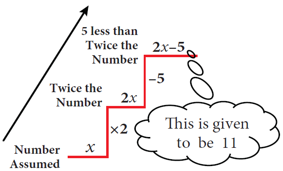
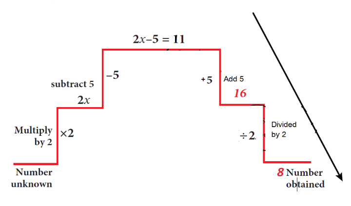

Method one The DO-UNDO Method:
Box item
Statement (given)
|
You Think
|
5 less than twice a number is 11.
|
The number needed is unknown. Let it be x. Twice the number gives 2x. 5 less is 2x minus 5. This result is given to be 11.
|

This formation of equation can be visualized as follows:

From the number x, we reached 2x minus 5 by performing operations like subtraction, multiplication etcetra. So when 2x minus 5 is equal to 11 is given, to get back to the value of x, we have to 'undo' all that we did exclamatory symbol Thus, we ‘do’ to form the equation and ‘undo’ to get the solution.
Example 3.30
(a) Solve the equation: x minus 7 is equal to 6
Solution:
X minus 7 is equal to 6 given
X minus 7 plus 7 is equal to 6 plus 7 add 7 on both sides
X is equal to 13
(b) Solve the equation 3x is equal to 51
Solution: 3x is equal to 51 given
3 multipy x is equal to 51
3 multiply x the whole divided by 3 is equal to 51 divided by 3
(divide 3 on both sides)
X is equal to 17
Method two Transposition method
The shifting of a number from one side of an equation to other is called transposition.
For the above example, (a) doing addition of 7 on both sides is the same as changing the number minus7 on the left-hand side to its additive inverse +7 and add it on the right-hand side.
X minus 7 is equal to 6
X is equal to 6 + 7
X is equal to 13
likewise, in example (b) doing division by 3 on both sides is the same as changing the number 3 on the LHS to its reciprocal 1 divided by 3 and multiply it on the RHS and vice-versa.
For Example:
First one 6x is equal to 12
X is equal to 12 divided by 6
X is equal to 2
Second one y divided by 7 is equal to 10
Y is equal to 10 multiply 7
Y is equal to 70
Can you get more than one solution for a linear equation question mark
Example 3.31
Solve: 2x + 5 is equal to 9
Solution:
2x plus 5 is equal to 9
2x is equal to 9 minus 5
2x is equal to 4
X is equal to 4 divided by 2 is equal to 2
While rearranging the given linear equation, group the like terms on one side of the equality sign, and then do the basic arithmetic operations according to the signs that occur in the expression.
Example 3.32
Solve: 4y divided by 3 minus 7 is equal to 2y divided by 5
Solution:
(Rearranging the like terms)
4y divided by 3 minus 2y divided by 5 is equal to 7
Using cross multiplication
20y minus 6y the whole divided by 15 is equal to 7
14y is equal to 7 multiply 15
Y is equal to 7 multiply 15 the whole divided by 14
Y is equal to 15 divided by 2
1. Solve for ‘x’ and ‘y’
First one 2x is equal to 10
Second one 3 + x is equal to 5
Third one x minus 6 is equal to 10
Fourth one 3x plus 5 is equal to 2
Fifth one 2x divided by 7 is equal to 3
Sixth one minus 2 is equal to 4m minus 6
Seventh one 4 multiplied by open bracket 3x minus 1 close bracket is equal to 80
Eighth one 3x minus 8 is equal to 7 minus 2x
Nineth one 7 minus y is equal to 3 multiplied by open bracket 5 minus y close bracket
Tenth one 4 multiplied by 1 minus 2y close bracket minus 2 multiplied by open bracket 3 minus y close bracket is equal to 0
Page number 101
Exercise 3.6
1. Fill in the blanks:
First one The value of x in the equation x + y is equal to 12 is DASH
Second one The value of y in the equation y minus 9 is equal to minus of 5 plus 7 is DASH
Third one The value of m in the equation 8m is equal to 56 is DASH
Fourth one The value of p in the equation 2p divided by 3 is equal to 10 is DASH
Fifth one The linear equation in one variable has DASH solution
2. Say True or False.
First one The shifting of a number from one side of an equation to other is called transposition.
Second one Linear equation in one variable has only one variable with power 2.
3. Match the following:
(a) x divided by 2 is equal to 10 option 1 x is equal to 4
(b) 20 is equal to 6x minus 4 option 2 x is equal to 1
(c) 2x minus 5 is equal to 3 minus x option 3 x is equal to 20
(d 7x minus 4 minus 8x is equal to 20 option 4 x is equal to 8 divided by 3
(e) 4 divided by 11 minus x is equal to minus 7 divided by 11
option 5 x is equal to minus 24
Option (A) 1 2 4 3 5 option (B) 3 4 1 2 5
Option (C) 3 1 4 5 2 option (D) 3 1 5 4 2
4. Find x and p.
First one 2x divided by 3 minus 4 is equal to 10 divided by 3
Second one y + 1 divided by 6 minus 3y is equal to 2 divided by 3
Third one 1 divided by 3 minus x divided by 3 is equal to 7x divided by 12 + 5 divided by 4
5. Find x.
First one minus 3 multiplied by open bracket 4x + 9 close bracket is equal to 21
Second one 20 minus 2 multiplied by open bracket 5 minus p close bracket is equal to 8
Third one open bracket 7x minus 5 close bracket minus 4 multiplied by open bracket 2 + 5x close bracket is equal to 10 multiplied by open bracket 2 minus x close bracket
6. Find x and m.
First one 3x minus 2 the whole divided by 4 minus x minus 3 the whole divided by 5 is equal to minus 1
Second one m+9 the whole divided by 3 m + 15 is equal to 5 divided by 3
Page number 102
The challenging part of solving word problems is translating the statements in to equations.
Collect as many such problems and attempt to solve them.
Example 3.33
The sum of two numbers is 36 and one number exceed another by 8. Find the numbers.
Solution:
Let the smaller number be x and the greater number be x+8
Given: the sum of two numbers is equal to 36
X + open bracket x+8 close bracket is equal to 36
2x + 8 is equal to 36
2x is equal to 36 minus 8
2x is equal to 28
X is equal to 28 divided by 2 is equal to 14
Hence,
(i) The smaller number, x is equal to 14
(ii) The greater number, x + 8 is equal to 14 + 8 is equal to 22
Example 3.34
A bus is carrying 56 passengers with some people having rupees 8 tickets and the remaining having rupees 10 tickets. If the total money received from these passengers is rupees 500, find the number of passengers with each type of tickets.
Solution:
Let the number of passengers having rupees 8 tickets be y. Then, the number of passengers with
rupees 10 tickets is (56 minus y).
Total money received from the passengers equal to rupees 500
That is y multiply 8 plus open bracket 56 minus y close bracket multiply 10 is equal to 500
8y plus 560 minus 10y is equal to 500
8y minus 10y is equal to 500 minus 560
Minus 2y is equal to minus 60
Y is equal to 60 divided by 2
Y is equal to 30
Hence, the number of passengers having,
(i) rupees 8 tickets is equal to 30
(ii) rupees 10 tickets is equal to 56 minus 30 equal to 26